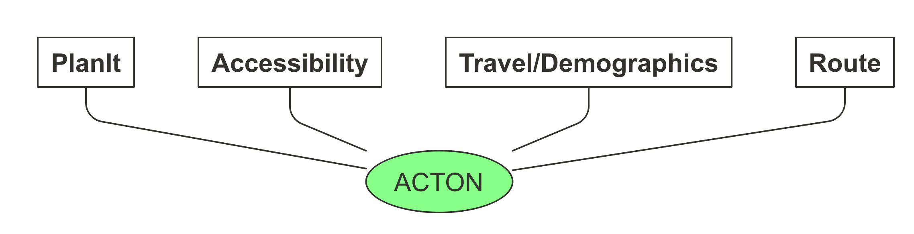

Introduction
ACTON, which stands for active transport options for new developments, is a research project that provides provide evidence for local authorities, housing developers and civil society groups to support planning and investment that enables the walking and cycling revolution that is needed to tackle health and environmental issues. To make the results of the research more reproducible and accessible to others, it is also an R package.
In first place, ACTON is about evidence-based planning and that means it is about data. ACTON provides easy access to actionable data from 4 main sources, each of which is already in the public domain, which had never before been made available in a single place or analysed together to support planning, as illustrated in the schematic diagram below.

The four main data sources shown above are:
- PlanIt data on new developments based on planning documents submitted to local government planning departments
- Accessibility data, including travel times by mode for different trip purposes, e.g. the average time taken to cycle to the shops, for small administrative zones (MSOA and LSOA level)
- Trave/demographic data from surveys (the 2011 Census in the first instance), providing information about the number of people in different groups in administrative zones and likely work destinations at the origin-destination level (plus data derived from the Census via the Propensity to Cycle Tool project)
- Route data from routing services such as CycleStreets.net, providing information on the transport networks surrounding new development sites, with variables such as busyness and speed limits along roads nearby new and planned development sites
ACTON seeks to make these datasets more widely accessible and actionable by combining them and using them to assess walking and cycling provision in and around new developments, to inform policies and investment
For more information about the research project, see the ACTON report (PDF version available here) and case study articles.
Installing the R package
To install the acton package, run the following commands in an R console (see here for information on installing R):
install.packages("remotes") remotes::install_github("cyipt/acton", dependencies = "Suggests")
Setup instructions
To get routes from CycleStreets.net, you will need to set-up an API key called CYCLESTREETS with usethis::edit_r_environ(), as documented here: https://docs.ropensci.org/stplanr/reference/route_cyclestreets.html#details
Brief demo
The package can be used to get data on new developments as follows:
library(acton) # data from specific postcode planning_data = get_planit_data(pcode = "LS2 9JT", limit = 2, app_size = "large") #> Getting data from https://dev.planit.org.uk/api/applics/geojson?limit=2&bbox=&end_date=2020-04-16&start_date=2000-02-01&pg_sz=2&pcode=LS2%209JT&app_size=large planning_data #> Simple feature collection with 2 features and 26 fields #> geometry type: POINT #> dimension: XY #> bbox: xmin: -1.553865 ymin: 53.80698 xmax: -1.552019 ymax: 53.80897 #> geographic CRS: WGS 84 #> # A tibble: 2 x 27 #> address altid app_size app_state app_type associated_id authority_id #> <chr> <chr> <chr> <chr> <chr> <chr> <int> #> 1 Old Mi… <NA> Large Permitted Full <NA> 292 #> 2 Univer… <NA> Large Permitted Full <NA> 292 #> # … with 20 more variables: authority_name <chr>, consulted_date <chr>, #> # decided_date <date>, description <chr>, distance <dbl>, docs <chr>, #> # lat <dbl>, link <chr>, lng <dbl>, name <chr>, other_fields <chr>, #> # postcode <chr>, rec_type <chr>, reference <chr>, source_url <chr>, #> # start_date <date>, uid <chr>, url <chr>, when_updated <dttm>, #> # geometry <POINT [°]> planning_data$name #> [1] "Leeds/17/03618/FU" "Leeds/12/04663/FU" planning_data$description #> [1] "6 storey new build research and teaching building; alterations to listed building; new landscaped public realm and alterations to the Clarendon Road/Cemetery Road junction" #> [2] "Demolition of existing buildings and erection of a 6 storey library with ancillary landscaping"
Documentation
For a more detailed overview explaining how to use the package see the acton vignette.
For results of research into active travel opportunities in and around new developments in case study regions, see the case-studies vignette.
For documentation on each of the package’s functions, see the Reference page.